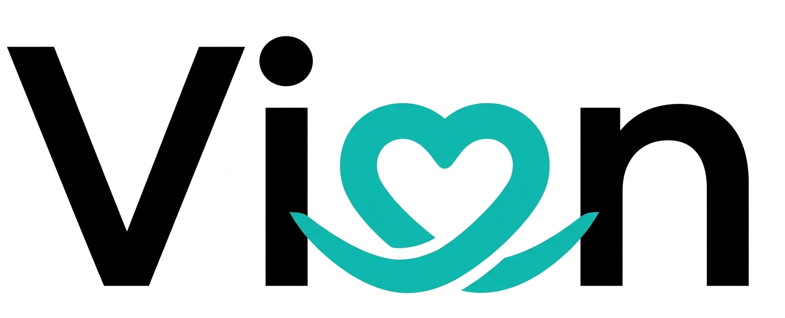

Vion
Compassionate Mental & Silver Care
마음의 건강을 지키는 AI 심리 상담 서비스입니다. 일상의 스트레스부터 깊은 고민, 어르신 돌봄까지 — Vion이 언제나 곁에 있습니다.
서비스 소개
당신의 마음을
가장 잘 이해하는 AI
Vion은 심리학 기반의 AI 알고리즘을 활용해 사용자의 감정 상태를 분석하고, 맞춤형 심리 케어를 제공합니다. 바쁜 일상 속에서도 마음의 건강을 챙길 수 있도록 24시간 함께합니다.
특히 혼자 사는 어르신이나 가족과 멀리 떨어진 시니어를 위한 실버 케어 기능도 갖추고 있어, 세대를 아우르는 따뜻한 돌봄을 실현합니다.

핵심 기능
Vion이 제공하는
맞춤형 케어
AI 감정 분석
대화 패턴과 감정 표현을 실시간으로 분석해 현재 심리 상태를 파악하고 맞춤형 조언을 제공합니다.
24시간 상담
언제든지 마음이 힘들 때 Vion과 대화할 수 있습니다. 새벽에도, 주말에도 항상 곁에 있습니다.
실버 케어
어르신을 위한 특화 기능 — 쉬운 UI, 음성 인터페이스, 건강 모니터링까지 세대를 아우르는 돌봄을 제공합니다.
맞춤 케어 플랜
대화 기록을 바탕으로 주간 심리 리포트와 개인화된 웰빙 계획을 제안해 지속적인 마음 건강을 지원합니다.
완벽한 개인정보 보호
모든 상담 내용은 암호화되어 저장되며, 제3자에게 절대 공유되지 않습니다. 마음 놓고 이야기하세요.
감정 추이 트래킹
시간에 따른 감정 변화를 시각화해 스스로 마음 건강 상태를 모니터링하고 긍정적인 변화를 확인할 수 있습니다.